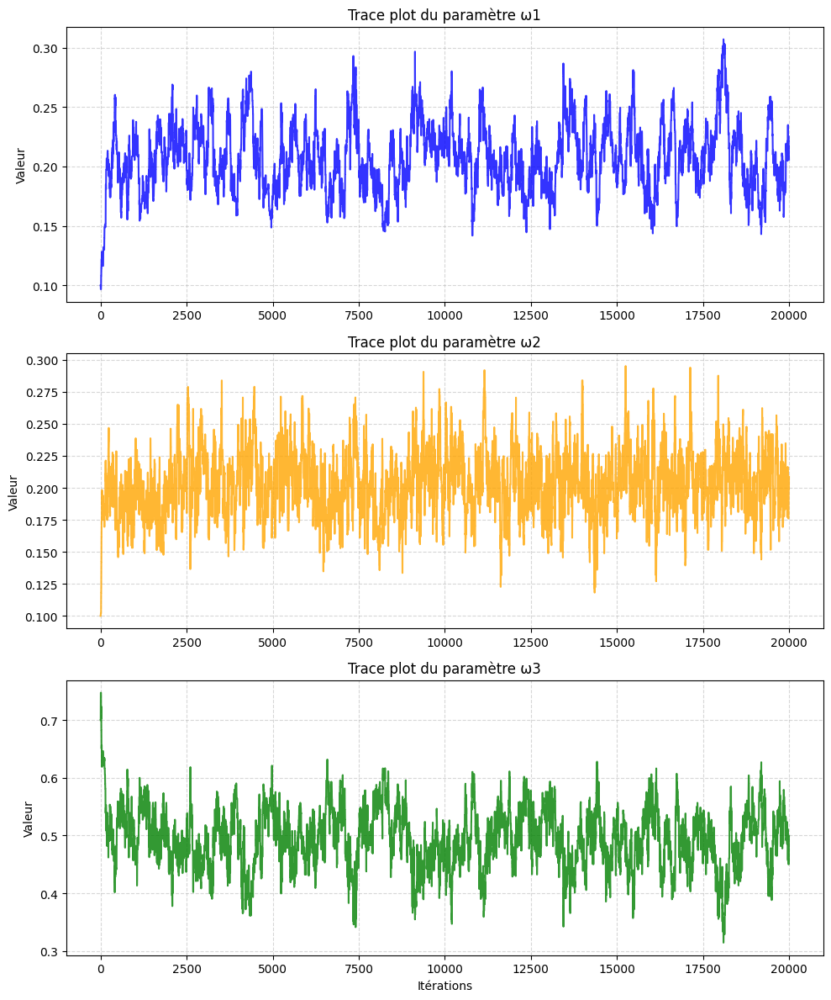
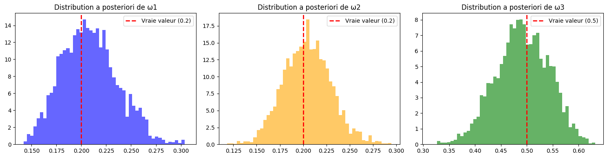
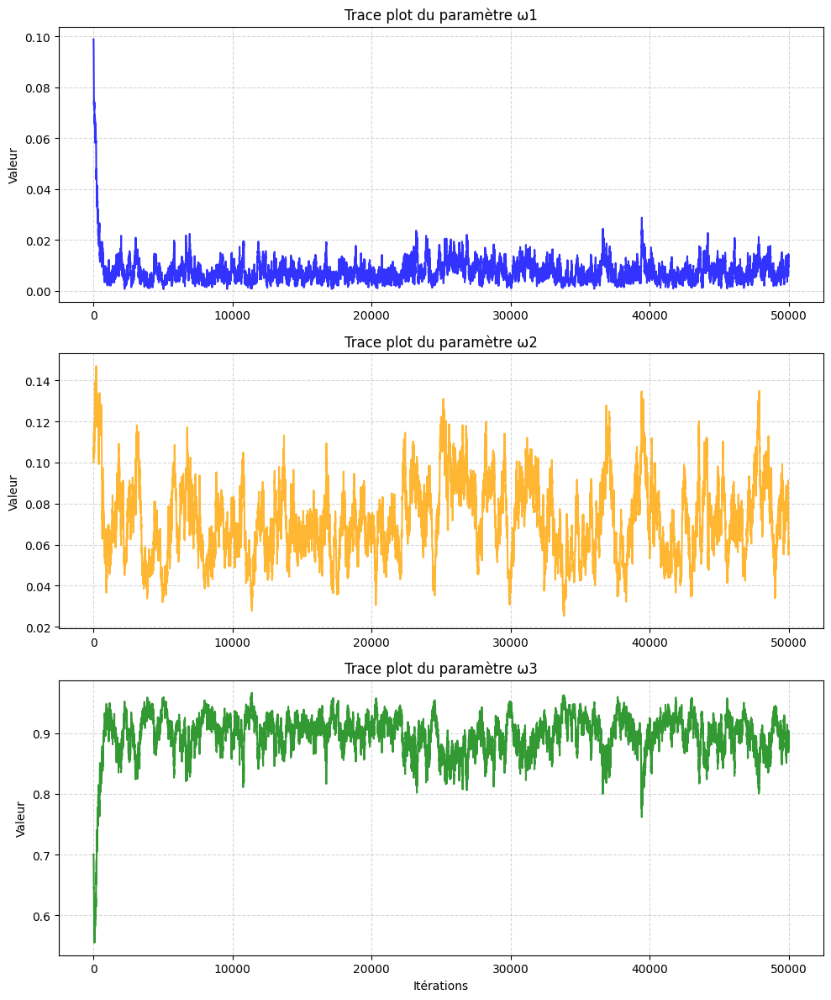
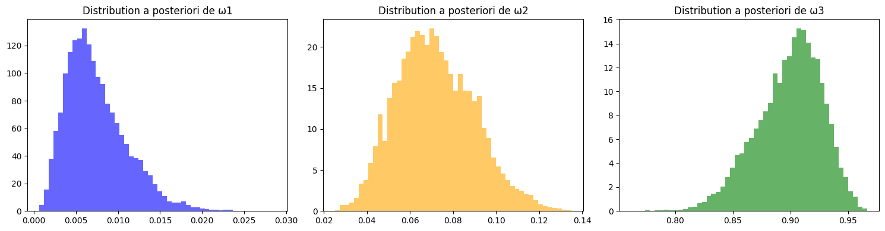
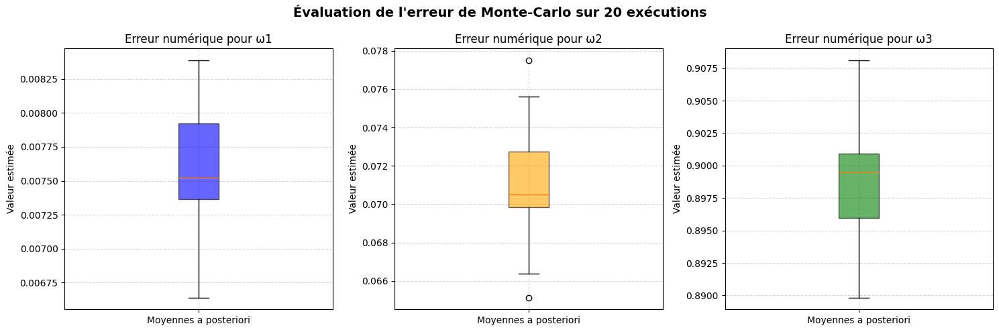
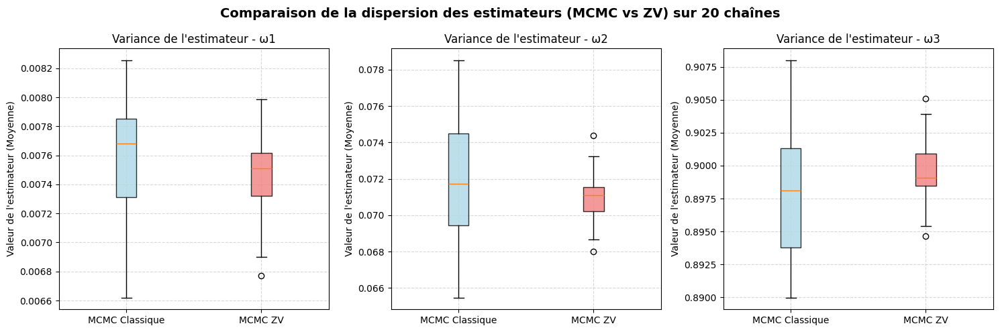
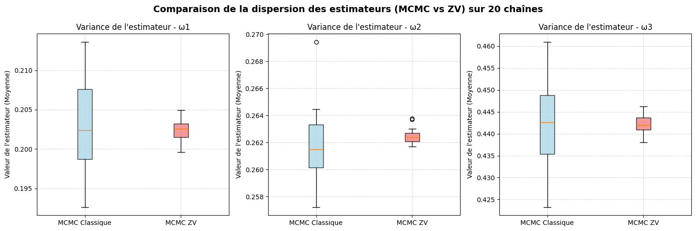
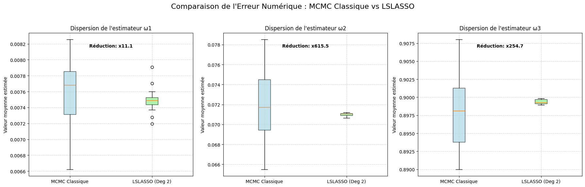
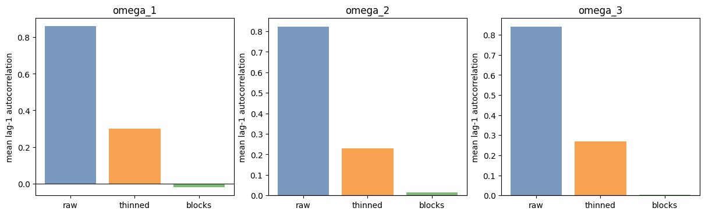

Question of the paper
How can we reduce the Monte Carlo error of posterior averages without changing the target distribution?
Main tool
\[ \widetilde f(x)=f(x)+a^\top z(x), \qquad z(x)=-\frac12\nabla\log\pi(x) \]
A. Mira, R. Solgi and D. Imparato, Statistics and Computing, 2013.
How can we reduce the Monte Carlo error of posterior averages without changing the target distribution?
\[ \widetilde f(x)=f(x)+a^\top z(x), \qquad z(x)=-\frac12\nabla\log\pi(x) \]
Use simulated data first, then real log-returns computed from exchange rates.
def simulate_garch(w1, w2, w3, T=3000):
r = np.zeros(T)
h = np.zeros(T)
h[0] = w1 / (1 - w2 - w3)
for t in range(1, T):
h[t] = w1 + w3 * h[t-1] + w2 * r[t-1]**2
r[t] = rng.normal(0, np.sqrt(h[t]))
return r, hStarting from the unconditional variance avoids an artificial warm-up in the simulated series.
proposal_w = current_w + rng.normal(0, step_sizes, 3)
proposal_lp = log_prior(proposal_w)
if proposal_lp > -np.inf:
proposal_ll = log_likelihood(proposal_w, r)
log_ratio = (proposal_ll + proposal_lp) - (current_ll + current_lp)
if np.log(rng.random()) < log_ratio:
current_w = proposal_wAcceptance rates in the final notebook: about 25% on simulated data and 36% on real data.


The chain explores a stable posterior region after burn-in.


The real series gives a more irregular posterior, especially for persistence.

This answers the instruction to assess numerical error instead of reporting one run only.
Explain how \(f(x)+a^\top z(x)\) is used through a linear regression.
term = 0.5 * (r[t]**2 / h[t] - 1.0) / h[t]
dh[t, 0] = 1.0 + w3 * dh[t-1, 0]
dh[t, 1] = r[t-1]**2 + w3 * dh[t-1, 1]
dh[t, 2] = h[t-1] + w3 * dh[t-1, 2]
grad_ll += term * dh[t]\[ z(w)=-\frac12\nabla \log \pi(w\mid r) \]

On real data, the variance reduction factors are about \(2.3\), \(6.0\), and \(3.8\) for the three parameters.

On simulated data, the first-order control variate reduces repeated-run variance by around \(20\) to \(27\) times.
Explain why the full regression becomes expensive, then adapt the Lasso idea.
features = []
for i in range(3):
features.append(Z_run[:, i]) # degree 1
for i in range(3):
for j in range(3):
delta = 0.5 if i == j else 0.0
features.append(W_run[:, j] * Z_run[:, i] - delta)
X_design = np.column_stack(features)Larger dictionaries can help, but the design matrix becomes larger and more collinear.
lasso = LassoCV(cv=5).fit(X_design, Y)
active_vars = np.where(lasso.coef_ != 0)[0]
if len(active_vars) > 0:
ols = LinearRegression().fit(X_design[:, active_vars], Y)
estimate = ols.intercept_
else:
estimate = np.mean(Y)This keeps the larger candidate set without forcing OLS to use every control.

The boxplots compare the ordinary MCMC mean with the LSLASSO-corrected estimator.
Think about dependence, and possible fixes such as thinning or block averages.
Consecutive Metropolis-Hastings draws are autocorrelated. So the OLS coefficient can be useful, but iid regression standard errors are not the right error assessment.
\[ n_{\mathrm{eff}} \approx \frac{n}{1+2\sum_{k\ge 1}\rho_k} \]

This is our practical answer: keep the control variate, but assess error with MCMC-aware diagnostics.